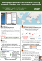
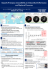
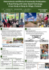
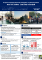
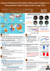
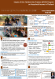
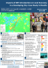
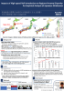
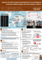
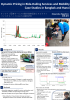

指導学生の研究紹介
こちらでは，加藤浩徳教授が最近指導した学生の研究事例を紹介します．
 |
朝倉壌：アジア新興都市における交通アプリの断片化と情報探索行動：バンコクの事例分析（2025年度卒業研究） |
 |
大島彩也夏：キャンパスのアクセス性が大学のパフォーマンスと地域経済に与える影響（2025年度卒業研究） |
 |
谷川央磨：LBT（労働集約型）道路舗装事業への参加要因と参加の影響：タイ・ノンコー村の事例分析（2025年度卒業研究） |
 |
柄本將太：インフォーマル都市交通がジェントリフィケーションの進行に与える影響：タイ・バンコクにおける事例分析（2024年度卒業研究） |
 |
遠藤未生：大都市圏におけるパンデミック下の行動制限政策がパンデミック収束後の都市活動水準に与えた影響（2023年度卒業研究） |
 |
長島史徒：ソーシャルキャピタルに着目したタイの一村一品プログラムが所得向上に与える影響の分析（2023年度卒業研究） |
 |
佐川正憲：発展途上都市におけるBRT導入の地域経済への影響：ブラジリアの事例分析（2022年度卒業研究） |
 |
加藤諒：高速鉄道の開業が地域内所得格差に与える影響：日本の新幹線に関する実証分析（2021年度卒業研究） |
 |
内田久美子：空港システム整備の地域経済への影響：グローバル分析とジャカルタのケース分析（2021年度卒業研究） |
 |
東野昌伸：オンライン配車サービスの動的価格設定とモビリティ：バンコクとハノイにおける事例研究（2020年度卒業研究） |